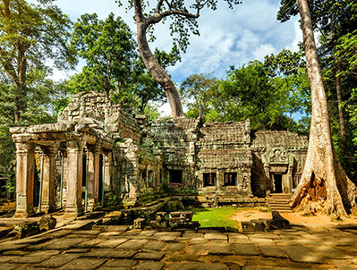
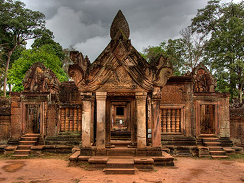

Discover the temples of Angkor with our private guided tours
We make it easy for you to discover the world-known ancient temples of Angkor! We offer private, guided tours for individuals or small groups. Choose your favorite vehicle and embark on your adventure! Our tours are led by an English-speaking tour guide, who will show you the sites, and tell you the history and all the secrets. We will pick you up and drop you off at your hotel. We can also organize trailor-made tours for you, just let us know here!
1-day Angkor Highlights Tour
$75
This full-day tour will take you to all the must-see places.
Wake up to the magical sunrise at Angkor Wat, then explore the magnificent temple and learn about its history. Visit Angkor Thom, the 11th century city, including the Bayon temple with the giant smiling faces. After lunch, visit Ta Phrom, a monastery taken over by the jungle and Preah Khan, a labyrinth of pavilions, halls and chapels. At last climb up to the hilltop temple of Phnom Bakheng, to see a truly memorable sunset.
Details
Book Now
2-day Angkor Temples Tour
$150

On the 1st day, wake up to the magical sunrise at Angkor Wat, then explore the magnificent temple and learn about its history. Visit Angkor Thom, including the Bayon temple with the giant smiling faces. After lunch, visit Ta Phrom, a monastery taken over by the jungle and Preah Khan, a labyrinth of pavilions, halls and chapels.
On the 2nd day, visit the temple of Prasat Kravan and see the remarkable brick bas-reliefs, then continue to Banteay Kdei and Srah Srang, the Royal Bath. Stop at Ta Keo, one of the great temple-mountains of Angkor. After lunch, visit Ta Som, a small temple of Bayon’s style and East Mebon, a temple with five towers standing on a small island. Your last stop will be the temple of Pre Rup which is a popular spot to enjoy the sunset.
Details
Book Now
1-day Remote Temples Tour
$90

We will take you off-the-beaten-track to lesser known, but equally beautiful sites to see temples in quiet and peace. We will drive 37 km northeast of Siem Reap to explore the temple of Banteay Srei, the pink women temple. After that we will drive to Phnom Kbal Spean. After a 30 mins walk in the forest, we will arrive at Sahasralina, the River of a Thousand Lingas. After lunch, we will visit Phnom Bok, where a 20-30 min climb will reveal a limitless horizon, broken only to the north by the view of Phnom Kulen. Then a nice countryside road will take us to Chau Srei Vibol, a temple in ruin in a quiet location, and finally, we will visit Banteay Samre.
Details
Book Now